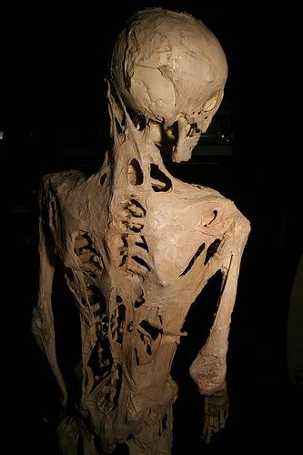

Fibrodysplasia ossificans progressiva
Genetic Disorder Research
After prenatal testing on our child, it appears as though it may have Fibrodysplasia ossificans progressiva (FOP), a genetic disorder that progressively causes irregular bone formation in tendons, muscles, connective tissue, &c. until said child is unable to move. The following pages are suggestions and reports from different sources on the outcome of the child’s life.